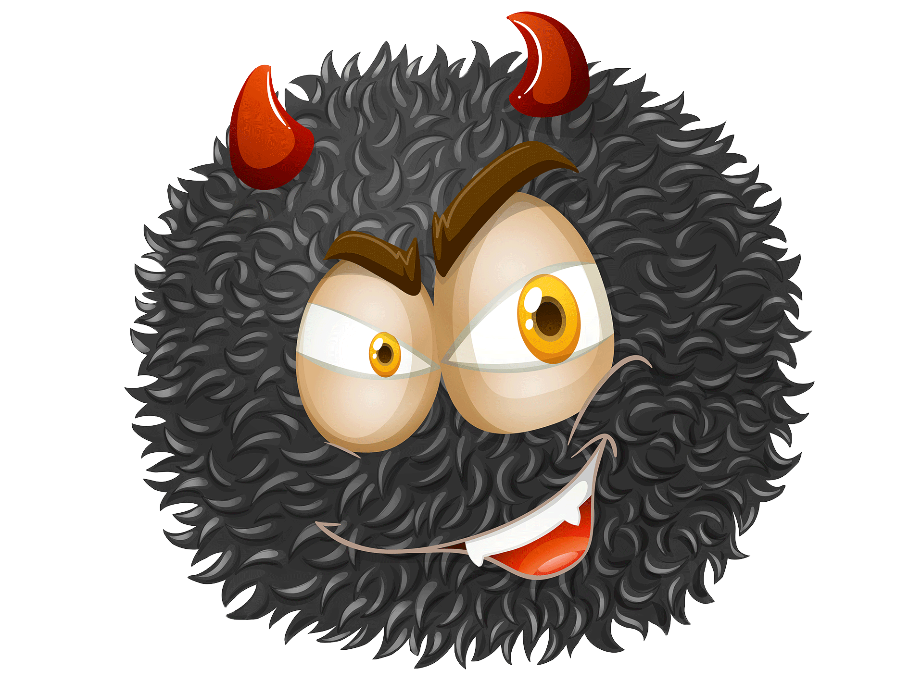
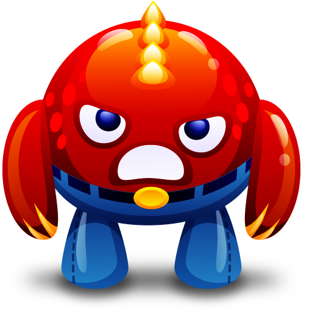
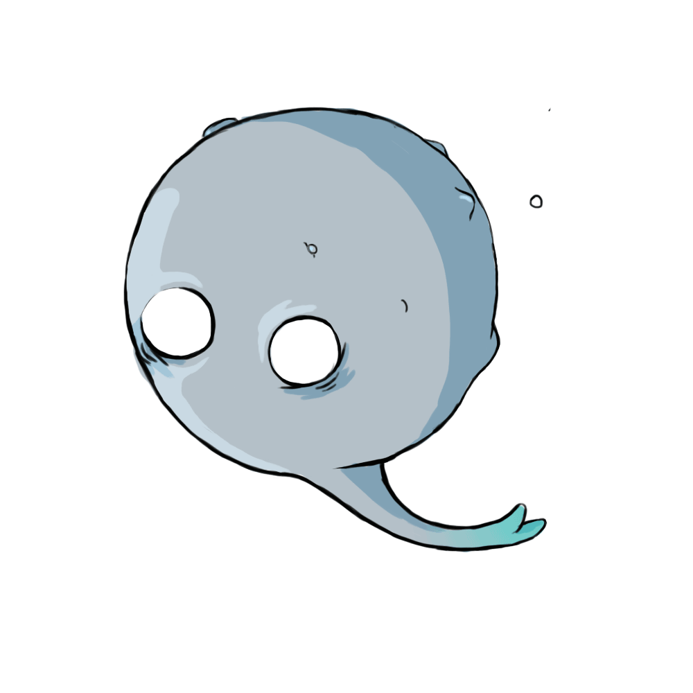
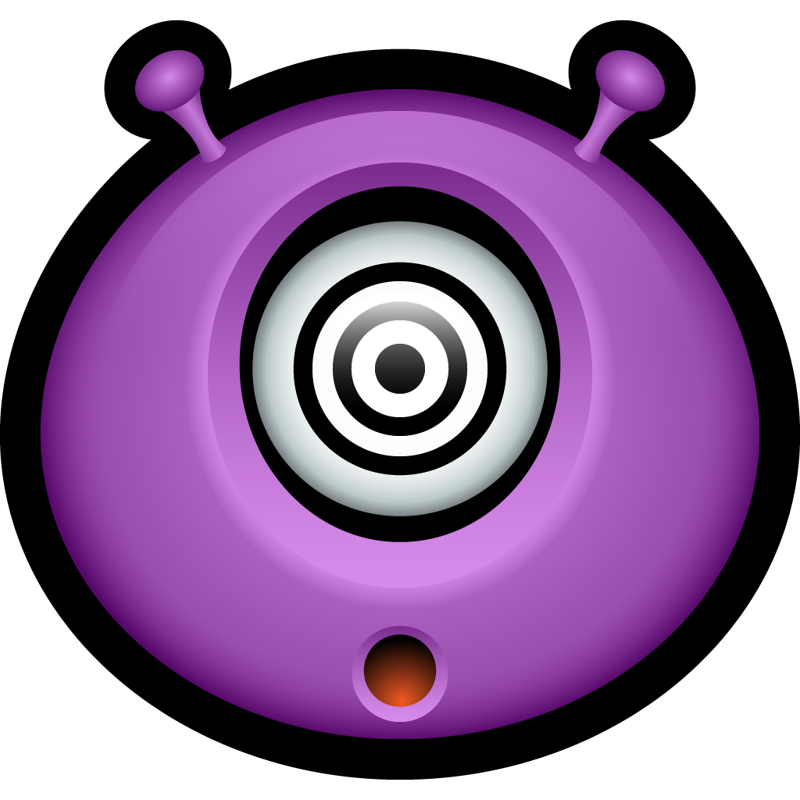
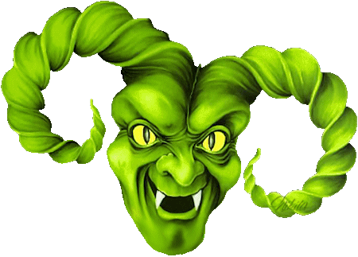
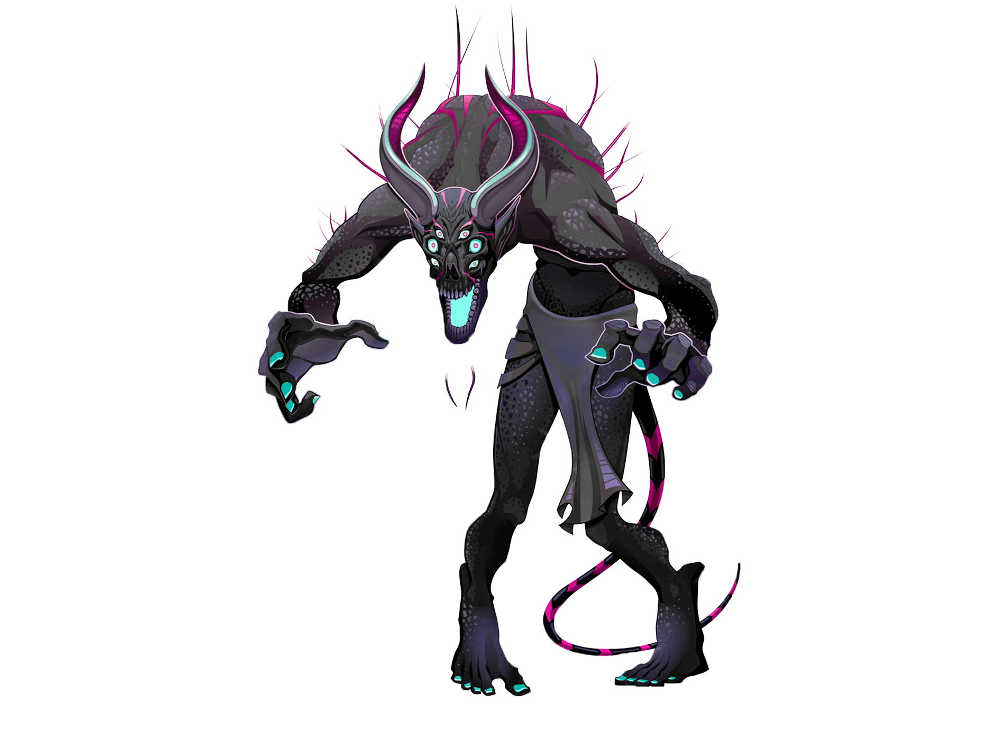

Darkboloss

Ces monstres sont reliés à une entité commune et farceuse. On en retrouve souvent dans l’univers, elle se nourrit du mal-être des autres et aime tourmenter les être-vivants des planètes qu’elle colonise.
Redcolere

Ces monstres sont les incarnations de l’entité de la colère. Présentes sur la plupart des planètes de l’univers, ces êtres sont féroces et résistants, bien qu’un peu têtues.
Hydrogene

Ces monstres sont les incarnations de l’entité de la peur et de la lâcheté. Ils se nourrissent des énergies de trahison et de crainte des êtres vivants. Il sont communs et très répandus dans l’univers depuis la rébellion de Luci.
Hypnotis

Ces monstres sont très mystérieux, personne ne sait d’où ils tiennent leur source. Il est probable qu’ils soient là depuis la création de l’univers. Ils hypnotisent les êtres vivants et leur font perdre la raison. Ils sont très dangereux pour la santé mentale des communautés.
Meduzem

Ces monstres antiques sont l’un des tous premiers virus existants. Il pénètre les êtres vivants accessibles et prend le contrôle de civilisations entières. Ils sont l’incarnation d’une entité maléfique ancienne et avide de pouvoir. Leur résistance s’est fortement accrue depuis la rébellion de Luci.
Billkiss

Ces monstres sont les plus puissants existants. Directement connectés à Luci, seigneur du Néant et du désespoir, ces êtres sont d’une puissance extrême et ne montrent aucune pitié. Le chaos les obsède et ne supportent pas l’état naturel des choses, de plus leur résistance est telle qu’il est très dur d’en venir à bout.